The American marten (Martes americana) was once a familiar presence in Pennsylvania. The small, agile forest mustelid that played an integral role in the ecological tapestry of our woodlands. Early naturalists described the species as agile, curious, and woven into the fabric of the state’s mountain ecosystems. But by the early 1900s, martens had vanished. Intensive logging, unregulated trapping, and widespread habitat loss carved the species out of the Commonwealth’s landscape long before modern wildlife protections existed. For decades, the marten lived only in memory and museum drawers. Yet biologists—especially those passionate about small carnivores—never let the story fully close. The marten’s absence became a symbol of both ecological loss and ecological opportunity.
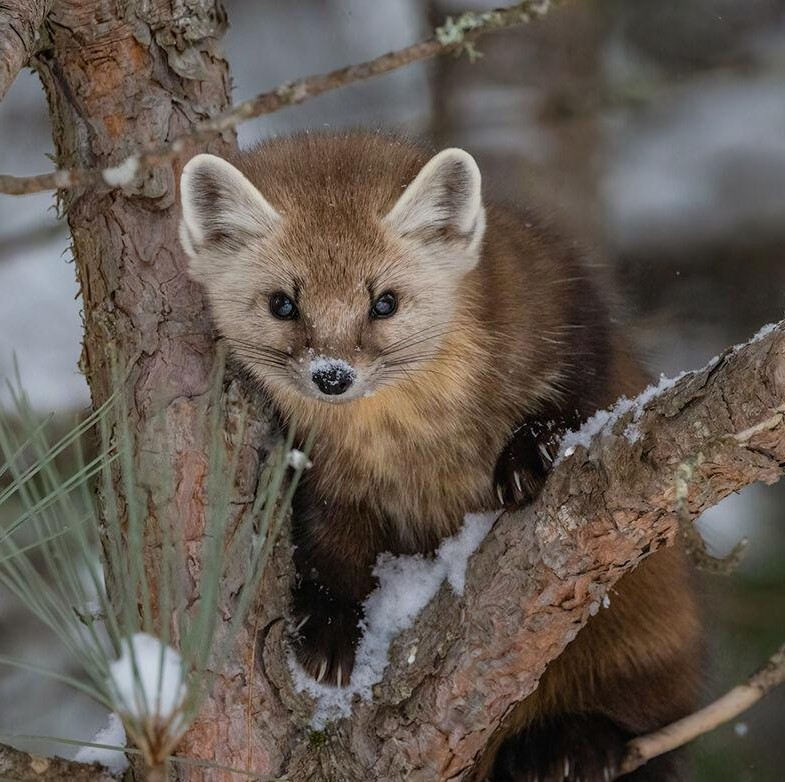
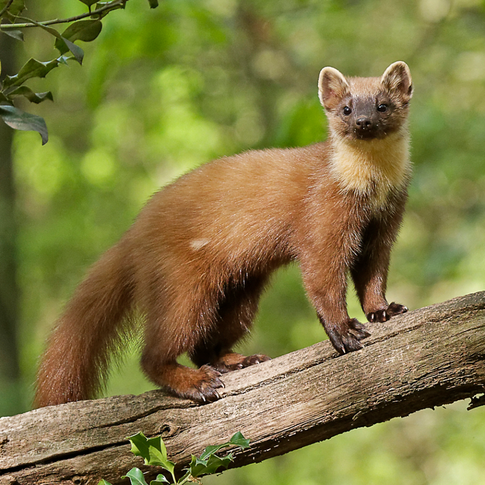
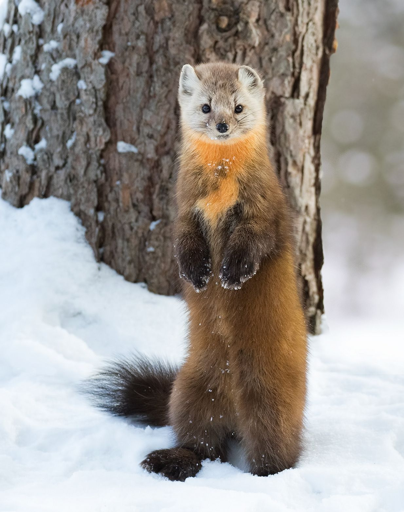
The American marten is often described as small but mighty—an animal whose survival depends on healthy, structurally diverse forests. They weave through downed logs, dense understories, and multilayered canopies with fluid agility, using every nook and cranny for cover, foraging, and denning. Their diets range from voles and shrews to winter berries, insects, and occasional bird eggs, making them both predators and scavengers. —Place a photo of a marten climbing or perched in evergreen branches— In Pennsylvania, many forest systems have matured in ways that now resemble prime marten habitat found in the Adirondacks, northern New England, and the Great Lakes states. High-elevation plateaus, mixed conifer–hardwood stands, and large tracts of public land offer a mosaic of habitats that could support a viable population. For biologists like Thomas Keller from the Pennsylvania Game Commission, these developing landscapes signaled something important: the ecological stage was quietly resetting itself. And with that, the idea of a marten reintroduction shifted from a distant dream to a scientifically grounded possibility.
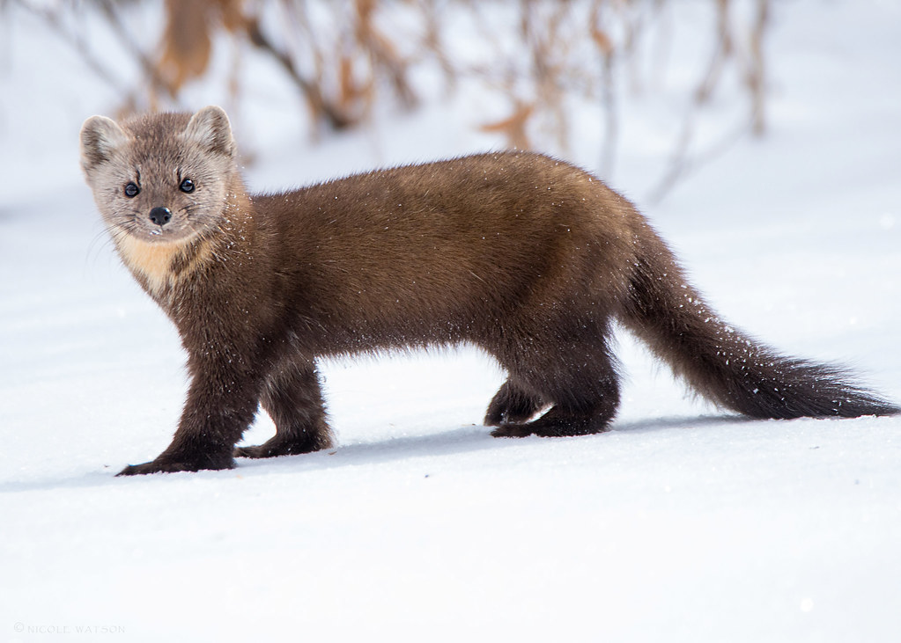 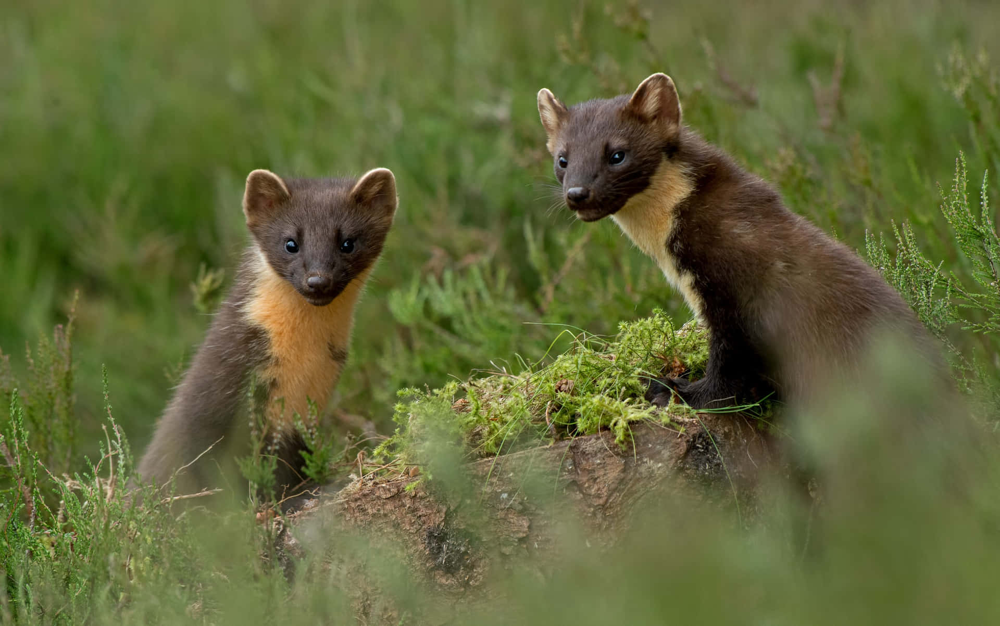
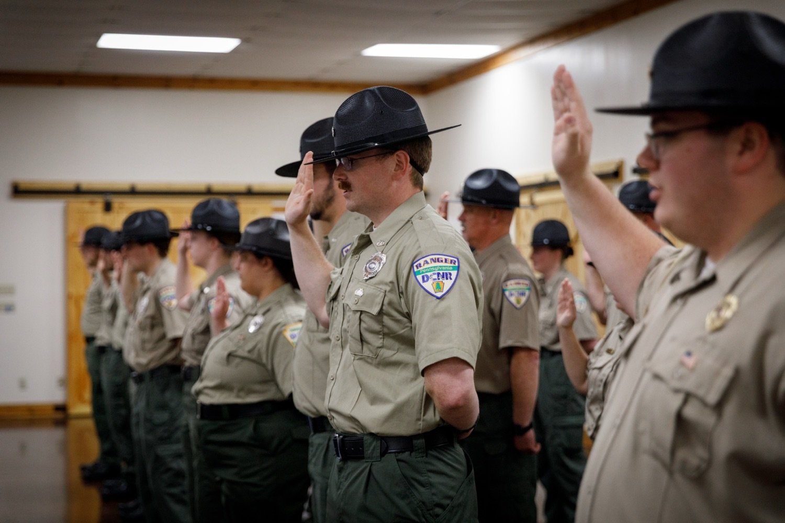 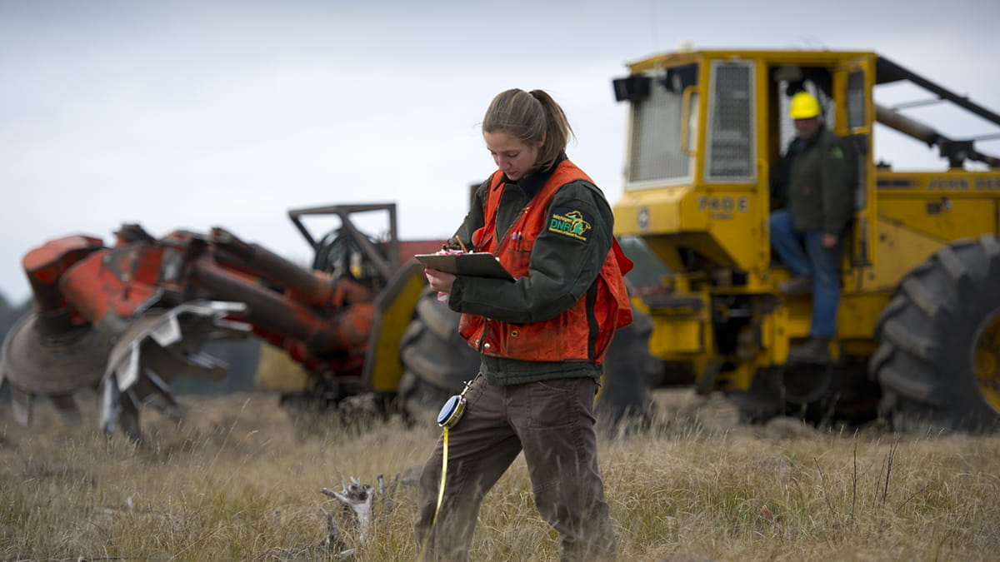
The Pennsylvania Game Commission (PGC) is the state’s wildlife management agency charged with “managing and protecting wildlife and their habitats while promoting hunting and trapping for current and future generations.” The PGC manages more than 1.5 million acres of State Game Lands and applies active habitat management to produce the habitat types many species require, while using tools such as the Pennsylvania Wildlife Action Plan and State Wildlife Grants to prioritize Species of Greatest Conservation Need and on-the-ground research. Recent, high-profile initiatives include the Pennsylvania Wetland Habitat Initiative and ongoing habitat and research projects across State Game Lands.

 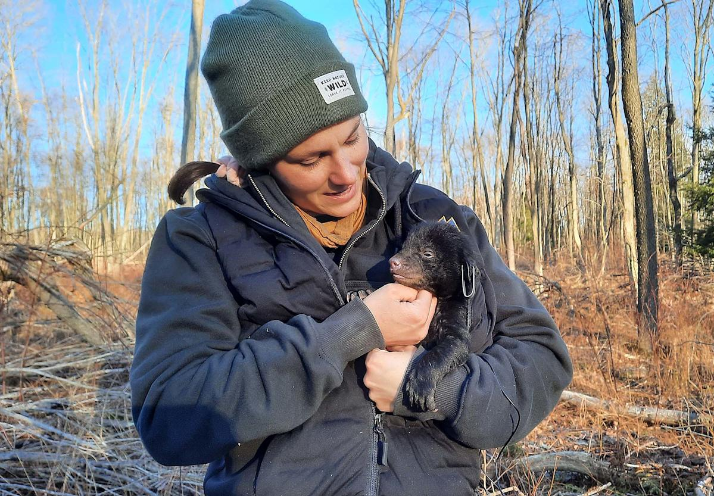
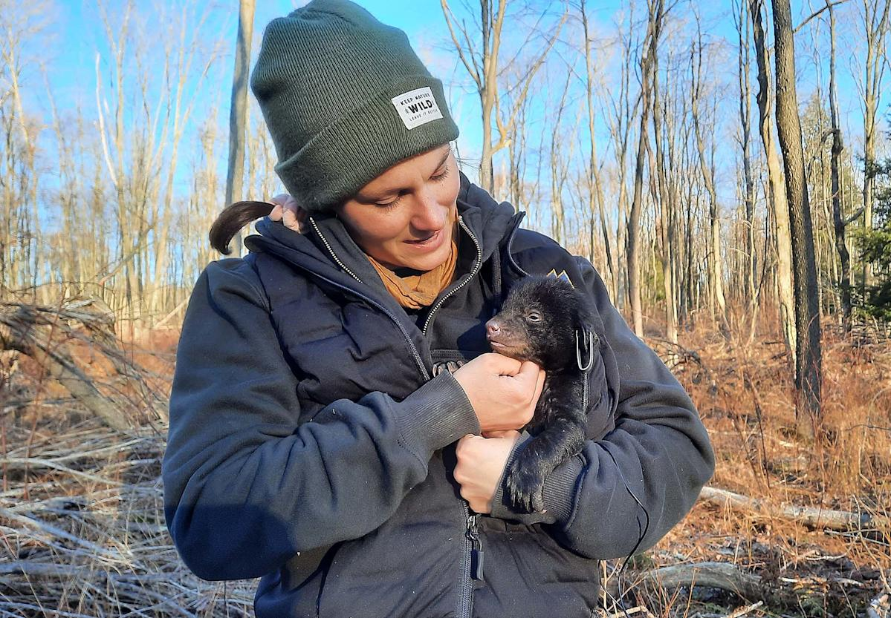
The Pennsylvania Fish & Boat Commission (PFBC) complements terrestrial conservation by protecting and enhancing the Commonwealth’s aquatic resources and ensuring public access for fishing and boating. Rooted in laws dating to the 19th and early 20th centuries, PFBC’s programs now emphasize hatchery operations, stream and lake habitat improvement, dam removal and restoration, and grant programs such as the Coldwater Heritage Partnership that fund local coldwater stream conservation. The PFBC adopts a mix of resource protection and public-service language — protecting aquatic species while supporting angling and safe boating access.
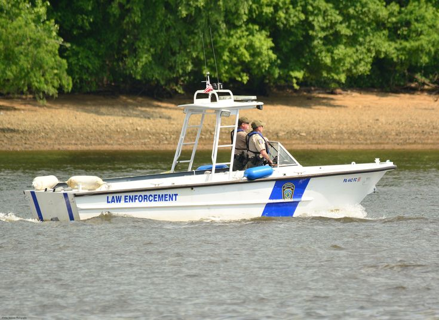 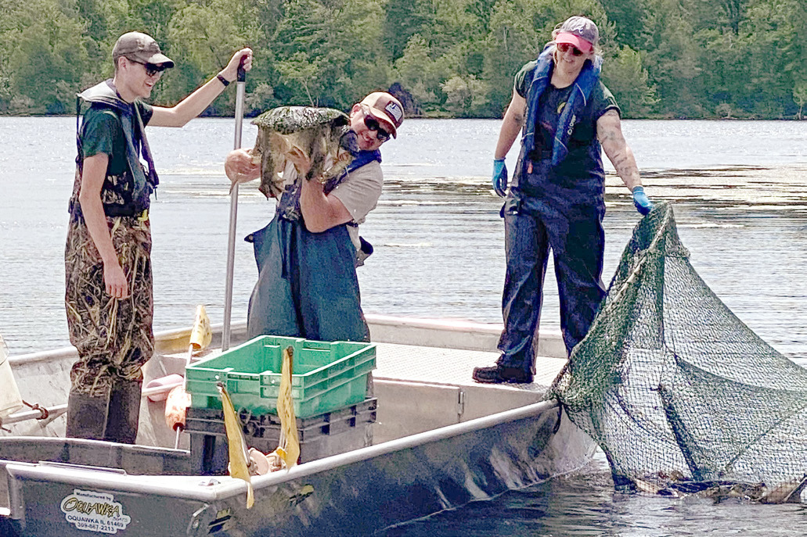The Pennsylvania Department of Environmental Protection (DEP) brings the pollution-control and remediation side of conservation into play: its core mission is to protect the Commonwealth’s air, land and water from pollution. DEP administers watershed restoration programs, hazardous sites cleanup, and regulatory programs that target legacy problems (abandoned mine drainage, contaminated industrial sites, and impaired waters) and emerging threats; its integrated water quality reporting and remediation programs are central to returning rivers and streams to healthier ecological function.
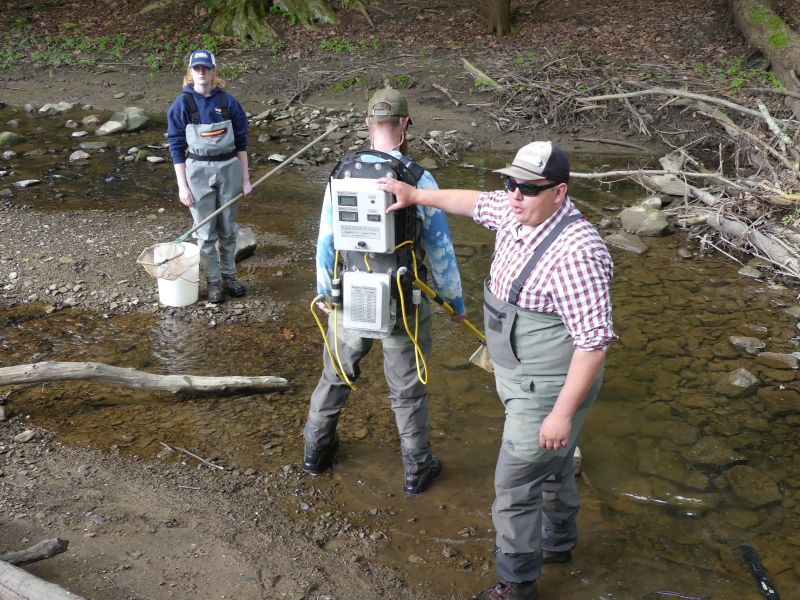
| Name: | Role: | Email: |
|---|---|---|
| Kara Scotti | Website Design | ScottKM22@juniata.edu |
| Joey Walsh | Website Programing | WalshJE22@juniata.edu |